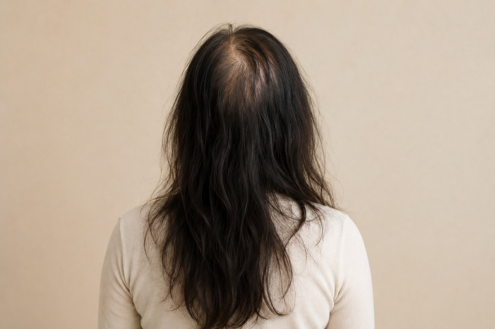
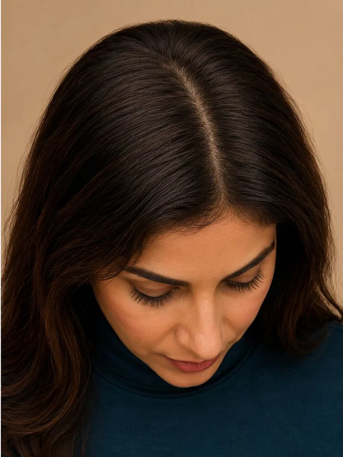
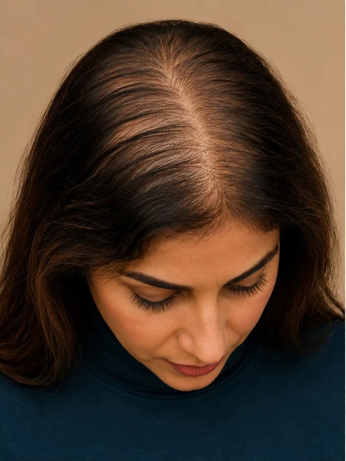
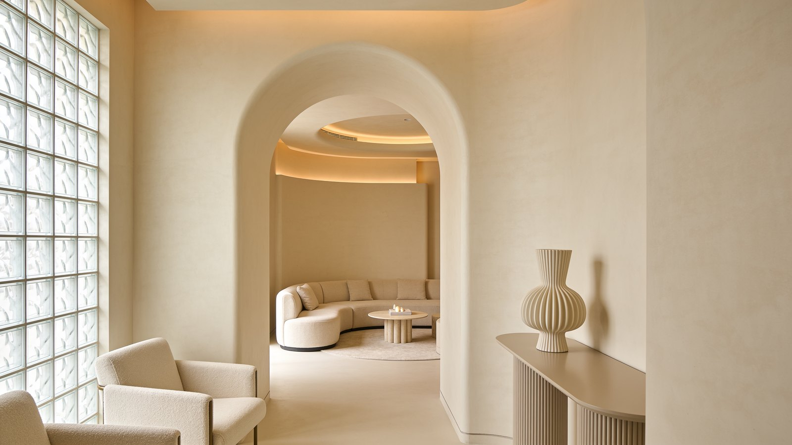
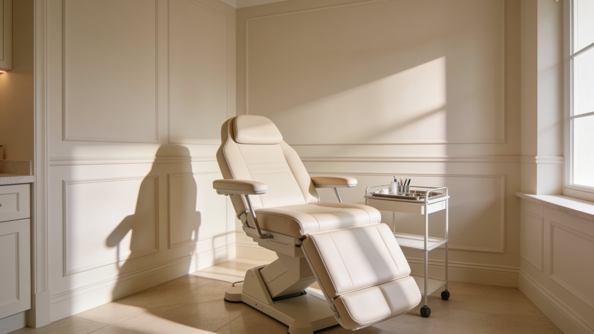
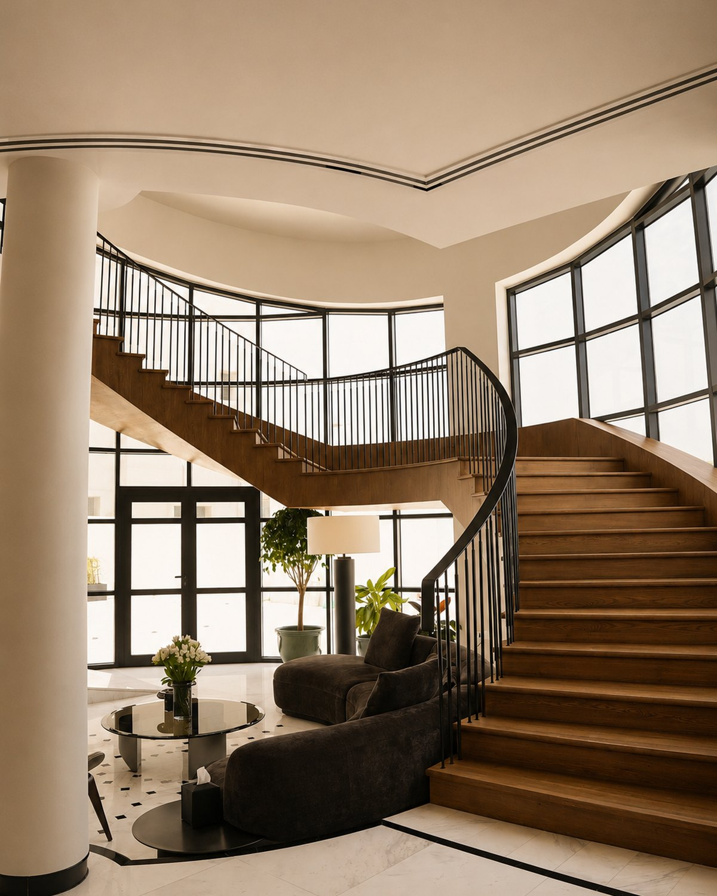
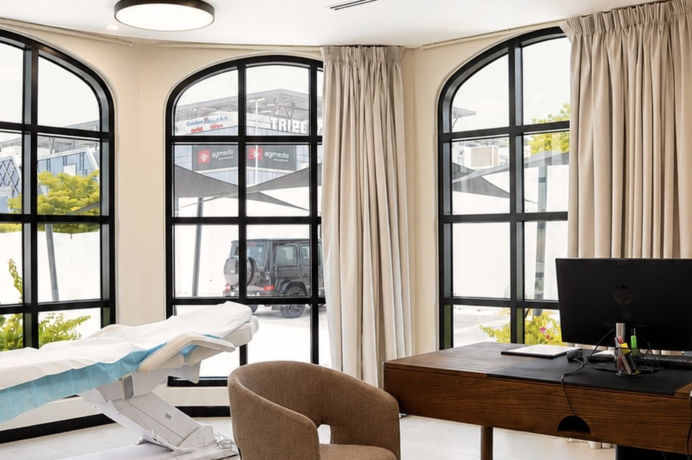
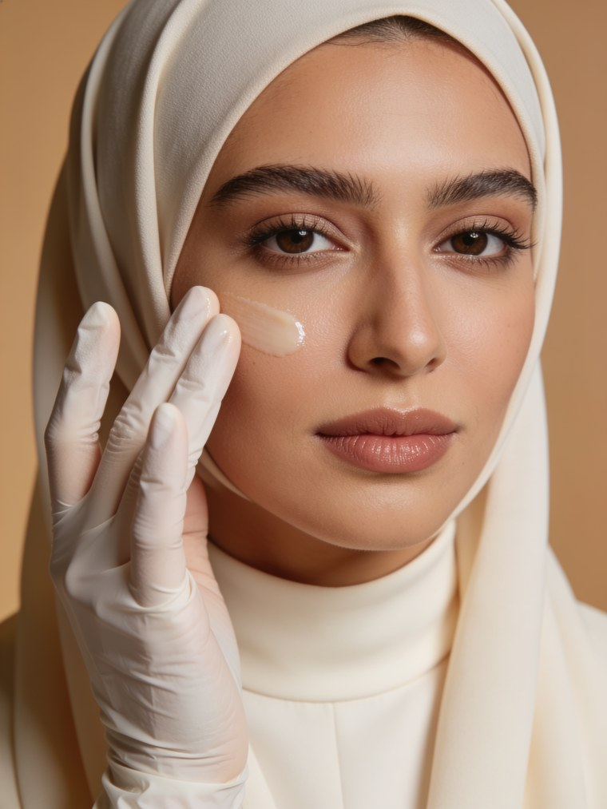

Skinالبشرة
Facials, peels, hydration, and plasma treatments — designed to refresh, renew, and improve skin quality.تنظيف، تقشير، ترطيب، وعلاجات بلازما — لتجديد البشرة وتحسين نضارتها.
Explore skin treatmentاكتشفي علاج البشرةFor thinning, shedding, and weak density.للشعر الخفيف، المتساقط، وضعيف الكثافة.

Individual results may vary. Images shared with patient consent.النتائج تختلف من شخصٍ لآخر. الصور منشورة بموافقة المريضة.
BATO creates non-surgical hair treatment plans guided by consultation, evaluation, and real understanding — never guesswork.تضع باتو خطط علاج شعر غير جراحية، مبنيّة على الاستشارة والتقييم والفهم الحقيقي — لا على التخمين.
Explore hair treatmentاكتشفي علاج الشعر

Shine the light · reveal the beforeسلّطي الضوء · اكشفي قبلIndividual results may vary. Images shared with patient consent.النتائج تختلف من شخصٍ لآخر. الصور منشورة بموافقة المريضة.
BATO Dubai brings the same medical-first philosophy to skin. Every treatment starts with understanding, not guessing.تجلب باتو دبي الفلسفة الطبية ذاتها إلى البشرة. كل علاج يبدأ بالفهم، لا بالتخمين.
Facials, peels, hydration, and plasma treatments — designed to refresh, renew, and improve skin quality.تنظيف، تقشير، ترطيب، وعلاجات بلازما — لتجديد البشرة وتحسين نضارتها.
Explore skin treatmentاكتشفي علاج البشرةInjectable skin rejuvenation for hydration, glow, elasticity, and healthier-looking skin.تجديد بالحقن للترطيب والإشراق والمرونة وبشرة أكثر صحة.
Book a consultationاحجزي استشارةBotox and filler designed for subtle enhancement, facial balance, and natural-looking results.بوتوكس وفيلر لتحسين هادئ وتوازن للملامح ونتائج طبيعية.
Book a consultationاحجزي استشارةAdvanced laser hair removal for men & women, using Candela and Cynosure technology.إزالة شعر بالليزر المتقدّم للرجال والنساء، بتقنية Candela وCynosure.
Book a consultationاحجزي استشارةHormone and vitamin testing to find what may be affecting your skin and overall beauty.تحاليل الهرمونات والفيتامينات لكشف ما قد يؤثّر في بشرتك وجمالك.
Explore lab testsاكتشفي التحاليلPrivate, refined, and medically guided from the moment you walk in.خصوصية ورقيّ وإشراف طبي منذ لحظة دخولك.





Understand the body first. Then treat what shows on the outside.نفهم الجسد أولاً، ثم نعالج ما يظهر على السطح.